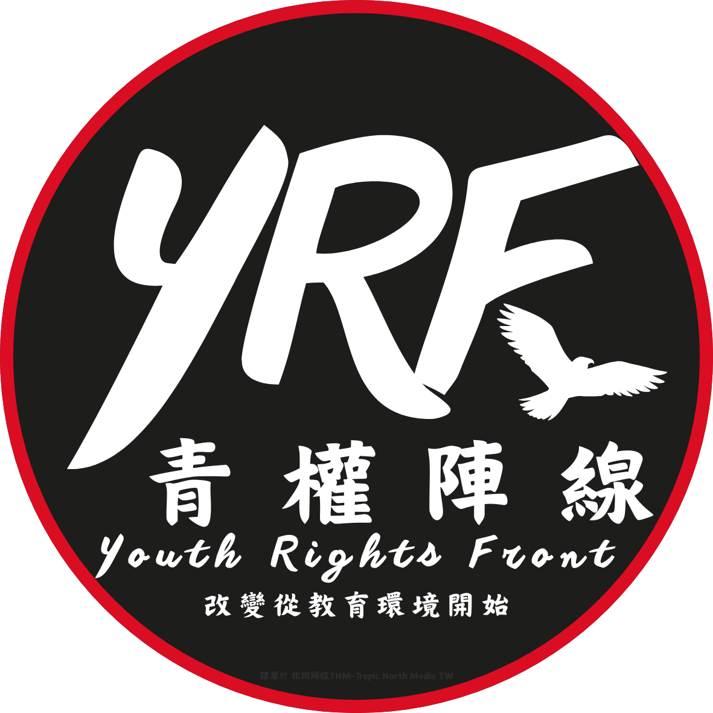

青少年權益 ． 教育改革 ． 性別平等 ． 勞動權 ． 校園民主
關於青權陣線
青權陣線是 TNMNEWS 旗下專案單位，專注於學生權益、教育改革與青年公共參與，致力讓學生的聲音被聽見、被理解、被記錄。
我們的宗旨
青權陣線由 TNMNEWS 創辦人團隊發起，初衷是提供學生與學權團體一個能夠發聲的平台。
我們相信：學生不是被動的受教者，而是積極的公共參與者。
青權陣線關注教育制度、校園民主、學生自治、教師權益與教育政策，並透過新聞報導、行動倡議與政策監督，推動更公平、更開放的教育環境。

我們關注的議題
立足青年視角，深耕四大核心範疇，促進理性公共對話。
學生權益與校園民主
推動學生自治、反對校園不當管教、監督學生會制度與選舉。
教育政策與制度改革
關注教育部政策、課綱修訂、手機禁令、升學制度與教育資源分配。
青年公共參與
鼓勵學生參與社會議題、培養公民意識、推動青年參政與政策倡議。
媒體教育與培訓
定期舉辦新聞倫理、媒體識讀、採訪技巧等培訓課程，提升學生媒體素養。